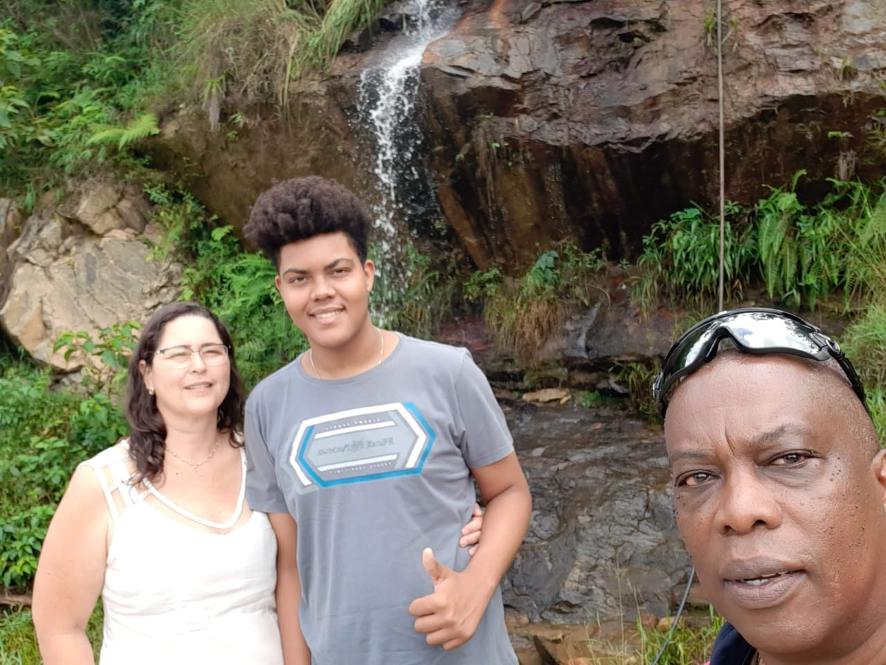
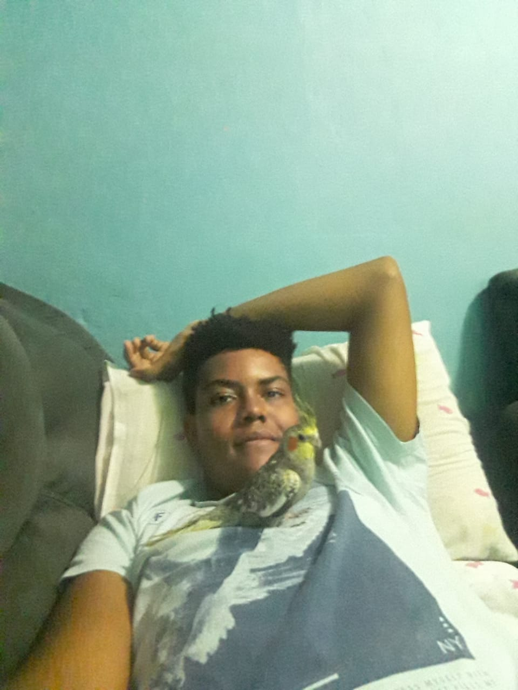
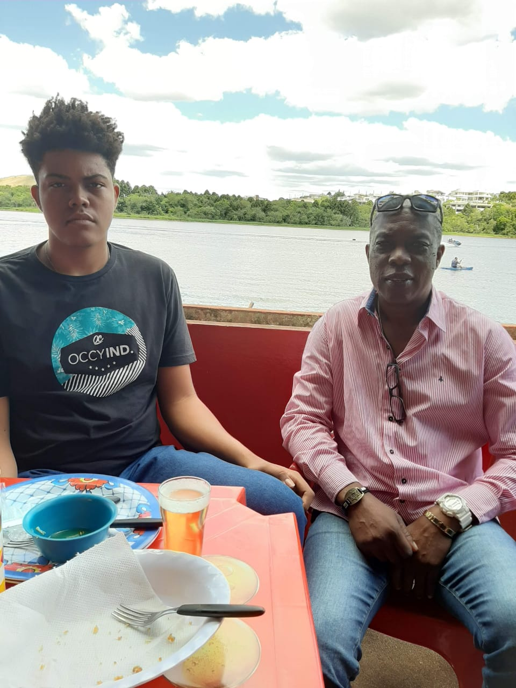
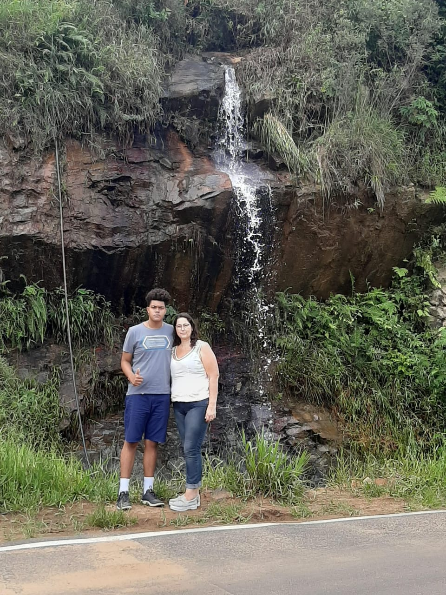

Meu nome é Carlos Alberto da Costa mais conhecido como Carlão, tenho 16 anos possuo 2,00m de altura e moro em Itapira, desde pequeno sempre gostei de animais não importa qual fosse o tipo e por isso sempre tive vários animais, hoje eu tenho 3 calopsitas, 1 pata, 2 éguas, 1 cachorra e uma caixa de abelhas.
Sempre fui muito estudioso o que me ajudou a chegar até aqui e vai me ajudar a adquirir mais conhecimento.
Meus Hobbys são: andar a cavalo, pescar, assistir filmes e series, jogar vídeo games e praticar basquete.
Já pratiquei judô, mas não gostava muito e depois comecei a jogar basquete onde participei de campeonatos por Itapira e pela minha antiga escola, em 2019 torci o joelho o que me afastou do campeonato no meio do ano mas me recuperei a tempo para a final, porem ano passado torci ele de novo e com a chegada da pandemia estou a mais de 1 ano sem jogar mas pretendo voltar a jogar basquete.
Sou uma pessoa bem calma, porem não me irrite até o meu limite pois você não ira querer me ver bravo.
   e é claro não podia faltar minha foto estilo will smith